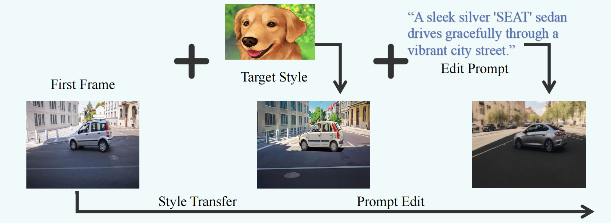

| Driving Video | Genereted Frame | Genereted Frame | Genereted Frame |
|---|---|---|---|
| Driving Video | Genereted Frame | Genereted Frame | Genereted Frame |
| Driving Video | Genereted Frame | Genereted Frame | Genereted Frame |
| Driving Video | Genereted Frame | Genereted Frame | Genereted Frame |
|---|---|---|---|
| Driving Video | Genereted Frame | Genereted Frame | Genereted Frame |
| Driving Video | Genereted Frame | Genereted Frame | Genereted Frame | Genereted Frame | Genereted Frame |
|---|
Please scroll right for more comparisons.
We present a comparison between our method and representative controllable video generation approaches:
For fairness, all methods are fine-tuned according to their official settings.
| Source Video | COTA-Motion (Ours) | MOFA-Video | VideoComposer |
|---|---|---|---|
| Motion_of_Car | |||
| Motion_of_Cartoon | |||
We edit the image style using Baidu’s open platform [3] and customize the object in the image using AnyDoor [4]. The edited image is then processed by our motion transfer method to generate the corresponding video. Object masks are obtained using off-the-shelf segmentation tools.
| Source Video | EVA (Ours) | FateZero |
|---|---|---|
[1] Niu, M., Cun, X., Wang, X., Zhang, Y., Shan, Y. Mofa-video: Controllable image animation via generative motion field adaptions in frozen image-to-video diffusion model. ECCV, 202.
[2] Wang, X., Yuan, H., Zhang, S. Videocomposer: Compositional video synthesis with motion controllability. NIPS, 2024
[3]Baidu AI Open Platform. https://ai.baidu.com. Accessed: 2025-06-26.
[4]Chen X, Huang L, Liu Y. Anydoor: Zero-shot object-level image customization. CVPR 2024